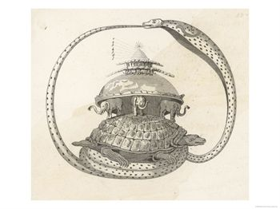
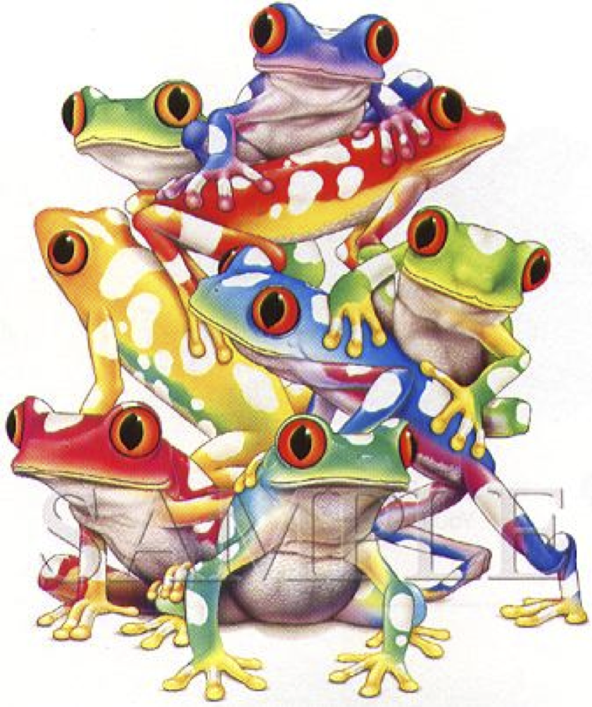

Tortugas y Ranas
Alan Kay crea Smalltalk e inventa el término “orientado al objeto”. Cuando se le pregunta qué significa él replica que “los programas Smalltalk sólo son objetos.” Cuando se le pregunta de que están hechos los objetos él responde, " de objetos". Cuando se le pregunta de nuevo él dice “mire, todos son objetos todo el camino hacia abajo. Hasta que se encuentre con las tortugas.” – Una breve y disparatada historia de los lenguajes de programación, James Iry
En la cosmología Hindú el “Universo era un ente cerrado, contenido en los anillos de Seshu, la cobra negra . En el fondo de todo había un mar de leche rodeado completamente por esa serpiente. Una enorme tortuga nadaba en el lácteo océano, sobre cuyo caparazón se apoyaban cuatro elefantes (cada uno en un punto cardinal). Al mismo tiempo esos elefantes sostenían sobre sus lomos a la Tierra. En su centro se formaba una gran montaña central donde un gigantesco fuego giraba a su alrededor ocasionando el día y la noche. Seshu, con un anillo superior contenía a la bóveda celeste.”[^1]

Mirándolo de cierta manera todas nuestra arquitecturas de sistemas con todas sus capas tienen una estructura similar a estas exóticas cosmologías, la diferencia es que a veces, pareciera que en vez de ser una torre de sólidos animales, como tortugas y elefantes, lo que tenemos es una torre llena de ranas dispuestas a saltar en cualquier momento :smile:
